Unequal Tagunlocks at two 1s · any timeClip the one "not equal" tag between two neighbouring wires on your own stand that hold different values. One of them may already be cut. Two reds, or two yellows, count as the same value, so they never take this tag.
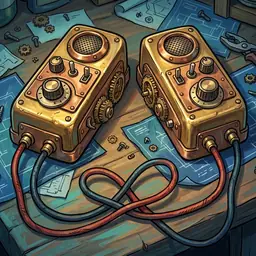
Handsetsunlocks at two 2s · any timeTrade one uncut wire with a crewmate, face down both ways. Each of you slots the new wire into sorted order; a two-stand player puts it on the stand the outgoing wire left. Any colour may be traded. Everyone sees which slots changed. A token in front of a traded wire goes with it. Nobody may ask for a value.
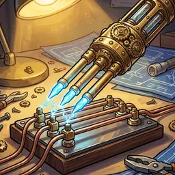
Triple Probeunlocks at two 3s · your turnWith your dual cut, name a number and point at three wires on one crewmate stand. It works if any of them matches; they cut one match without saying how many matched. If none match, the fuse burns one step and they tag one of the three with its true value.
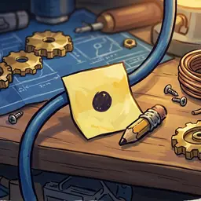
Sticky Noteunlocks at two 4s · any timePut an info token showing the true value in front of one of your own blue wires.
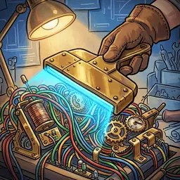
Full Scanunlocks at two 5s · your turnWith your dual cut, name a number and point at a crewmate's whole stand. It works if any wire there matches; they cut one match without saying how many. If none match, the fuse burns one step and they tag a wire of their choice.
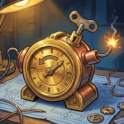
Rewindunlocks at two 6s · any timeTurn the fuse back one step.
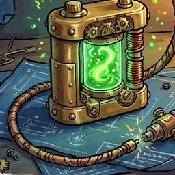
Rechargeunlocks at two 7s · any timeWake up one or two crew members whose personal tool is spent; each can use it once more this job.
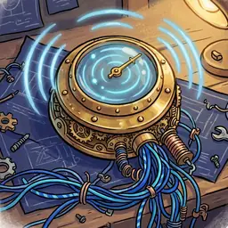
Sweepunlocks at two 8s · any timeCall a number. Every crew member, you included, says yes if they have at least one uncut blue wire of it; two-stand players answer for each stand. Nobody says how many or where. Red and yellow never count.
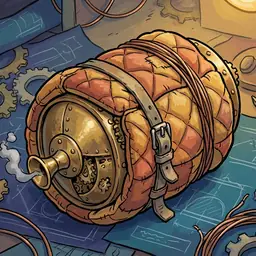
Damperunlocks at two 9s · start of your turnUse before your action. If your dual cut this turn misses, the fuse does not burn, and if you pointed at a red nothing goes off. A wrong non-red wire still gets its token; a red one gets none.
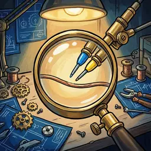
Two-Value Probeunlocks at two 10s · your turnWith your dual cut, name two values (yellow allowed) for one wire. You must hold both. If the wire is either one, it works and you cut your matching wire, so the crew also learns you hold the other value. Can be combined with the twin, triple or full-scan probe.
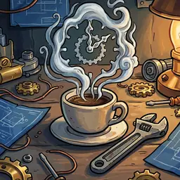
Coffee Breakunlocks at two 11s · your turnSkip your action and pick, without discussion, who goes next; play carries on clockwise from them.
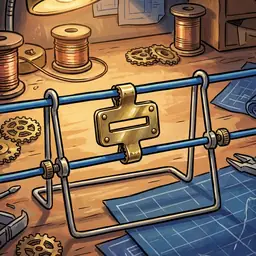
Equal Tagunlocks at two 12s · any timeClip the one "equal" tag between two neighbouring wires on your own stand that share a value. One may already be cut. Any two reds, or any two yellows, count as equal.
Yellow-wire card 1
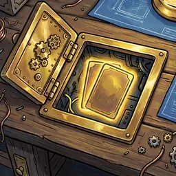
Hidden Compartmentunlocks at two yellows · instantThe moment it unlocks, draw two more equipment cards into this job. They may unlock at once if their values are already cut.
Four-of-a-kind cards 5
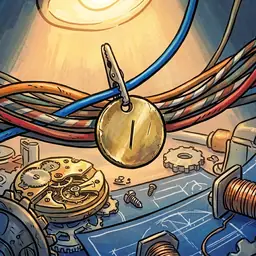
Lone Tagunlocks at four 2s · any timePut a x1 token in front of one of your blue wires, cut or not: that value appears only once on that stand, counting cut wires.
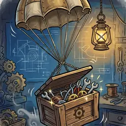
Supply Dropunlocks at four 3s · instantThe moment it unlocks, every used equipment card turns face up and works once more.
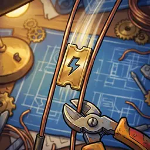
Express Passunlocks at four 9s · your turnSolo-cut two identical wires from your hand even if more of that value are still uncut elsewhere.
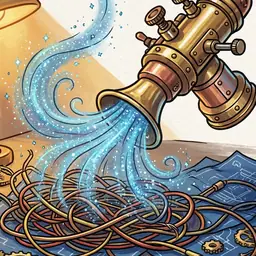
Vaporiserunlocks at four 10s · instantThe moment it unlocks, draw a random info token from the supply: everyone cuts every uncut wire of that number they hold.
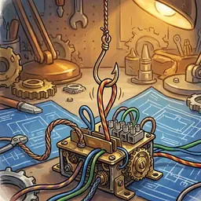
Hook Lineunlocks at four 11s · any timePoint at a crewmate's uncut wire and pull it, unseen, into your own hand in sorted order (a two-stand player picks the stand). Everyone sees where it came from and went.
Crew 9
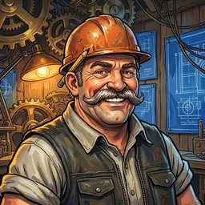
Foreman Brixforeman · tool: Twin ProbeRuns the job: goes first and settles setup choices.
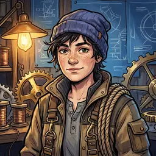
Wrentool: Twin ProbeRigger with steady hands.
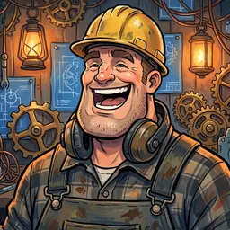
Piketool: Twin ProbeWrecking-ball operator.
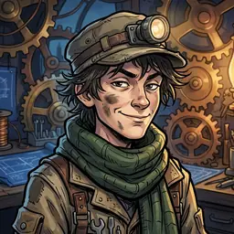
Mosstool: Twin ProbeTunnel and trench specialist.
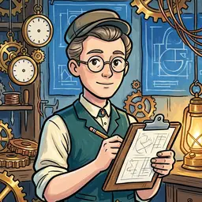
Tallytool: Twin ProbeKeeps the count on every charge.
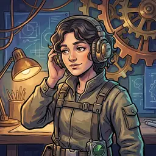
Echofrom job 31 · tool: Pocket SweepCarries a pocket sweep unit.
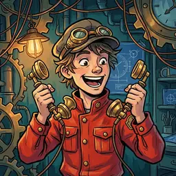
Relayfrom job 31 · tool: Pocket HandsetsNever without a pair of handsets.
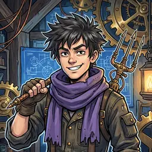
Tridentfrom job 31 · tool: Pocket Triple ProbePrefers three prongs to two.
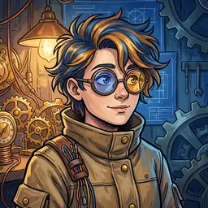
Prismfrom job 31 · tool: Pocket Two-Value ProbeReads two values at once.
Personal tools 5
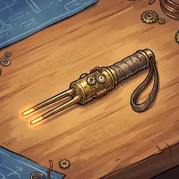
Twin Probeyour turnWith your dual cut, name a number (never yellow) and point at two wires on one crewmate stand. It works if either matches; if both do they quietly pick one. If neither matches the fuse burns one step and they tag one of the two. If exactly one is red nothing goes off and the tag goes on the other; if both are red, boom.
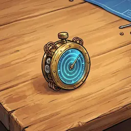
Pocket Sweepany timeYour own copy of the Sweep card.
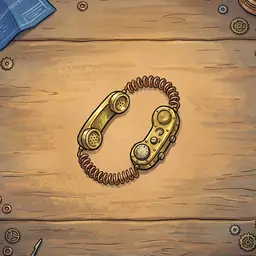
Pocket Handsetsany timeYour own copy of the Handsets card.
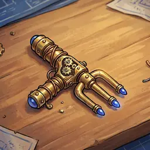
Pocket Triple Probeyour turnYour own copy of the Triple Probe card.
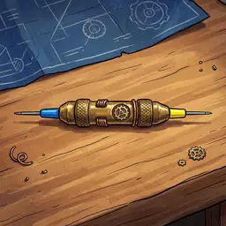
Pocket Two-Value Probeyour turnYour own copy of the Two-Value Probe card.